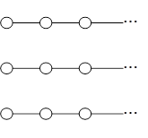
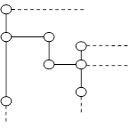
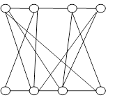

|
“教育领域”←（原型与隐喻、人开发计算机）→“教育软件”…… ----------------------网络资源及其思辨 教育数字思维视角的“托管对象平台.Net平台C#语言框架与案例”，又可称为，教育数字思维视角的“托管对象平台.Net平台C#语言原理与工程”、教育数字思维视角的“托管对象平台.Net平台C#语言理论与实践”…… ----------------------网络资源及其思辨 |
表 3‑7、图 3-1所示“教育数字思维的本质框架”，可以应用成为“托管对象平台.Net平台C#语言框架与案例”，具体化如案例 6‑1，教育数字思维视角地阐述（并可基于附录B所述方法/工具上机验证）。
案例 6‑1 教育数字思维视角的“托管对象平台.Net平台C#语言框架与案例”
|
“教育软件开始→教育软件中途→教育软件结束”事件中的“客户端MVC的视图V(架构/模式/关系/结构)、互动MVC的控制C(架构/模式/关系/结构)、服务端MVC的模型M(架构/模式/关系/结构)选用的托管对象平台.Net平台C#语言”的“需求、设计、开发、交付” 【注：本书计算机领域的“客户端MVC”“互动MVC”“服务端MVC”选用第四平台语言.Net平台C#语言映射各种平台语言，基于附录B所述工具验证】[[1]] |
|
教育软件开始、教育软件中途、教育软件结束（本章6.12节） 四、MVC架构（本章6.8节~6.11节） 三、模式（本章6.7节） 二、关系（本章6.6节） 一、结构（线性结构、树型结构、网状结构）（本章6.5节）    (a)线性结构 (b)树型结构 (c)网状结构 |
|
四、“客户端MVC”“服务端MVC”的 四个平台语言的软件第二平台语言的语法抽象：“计算机的托管平台.Net平台C#语言”隐喻“人的日常语言”（本章6.1节~6.4节，本书选用） |
|
三、“客户端MVC”“服务端MVC”的 四个平台语言的软件第一平台语言的语法抽象：“计算机的操作系统软件平台C/C++语言”隐喻“人的专业语言”（案例 4‑1中已简述，本书不选用） |
|
二、“客户端MVC”“服务端MVC”的四个平台语言的硬件第二平台语言的语法抽象：“计算机输入输出硬件平台的ASM语言”隐喻“人的肢体表情语言” （案例 4‑1中已简述，本书不选用） |
|
一、“客户端MVC”“服务端MVC”的四个平台语言的硬件第一平台语言的语法抽象：“计算机CPU硬件平台的0/1语言”隐喻“人脑的字符串/非字符串语言”（案例 4‑1中已简述，本书不选用） |
[[1]] nscript. 使用 C# 进行AI工程开发-基础篇：NativeAOT[EB/OL].[2023-06-27]. https://zhuanlan.zhihu.com/p/638859407
.Net平台C#语言源语言默认可以NativeAOT/ JITAOT两种方式编译成为目标语言（本书默认选用NativeAOT方式）。
nscript. 使用 C# 进行AI工程开发-基础篇：dotnet script 与 Polyglot [EB/OL].[2023-06-27] https://zhuanlan.zhihu.com/p/645258959
.Net平台C#语言源语言默认可以AOT中间语言/ JIT脚本两种方式编译成为目标语言（本书默认选用 JIT脚本方式）。
.Net平台C#语言开源后的这些发展非常令人兴奋。.Net平台C#语言开源媲美Java/JVM开源。.Net-Blazor-C#染指了JS的领地。.Net平台C#语言的NativeAOT 编译可以替代C/C++来写底层库。AI脚本领域，.Net平台C#语言可以替代Python。.Net平台C#语言是把Java/Python/JS、C/C++融为一体的超级平台语言。